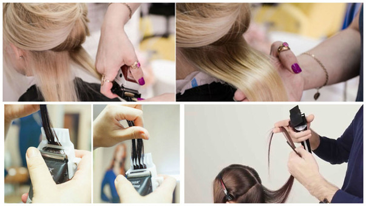
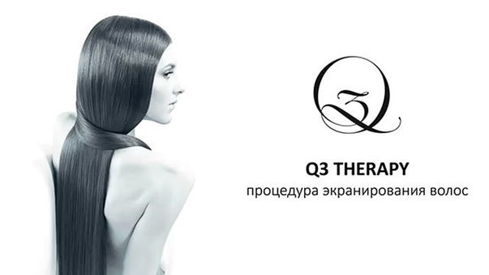

Полировка волос

Секущиеся кончики – проблема на сегодня достаточно частая, с которой легко справится полировка волос. Множество факторов негативно влияет на состояние наших волос. Раньше проблему с кончиками решала стрижка поврежденных волос. Но девушки, которые дорожат длиной своих волос при упоминании о стрижке кончиков приходят в ужас. Однако при использовании насадки для полировки длина ваших волос практически не пострадает.
Экранирование волос

Экранирование заключается в покрытии волос тонкой пленкой с особым питательным составом, благодаря которому происходит защита и укрепление их внутренней структуры. Действие препарата имеет сходства с ламинированием, но в нем витамины действуют только на поверхности стержня. Именно в этом заключается самая большая отличительная черта экранирования волос.